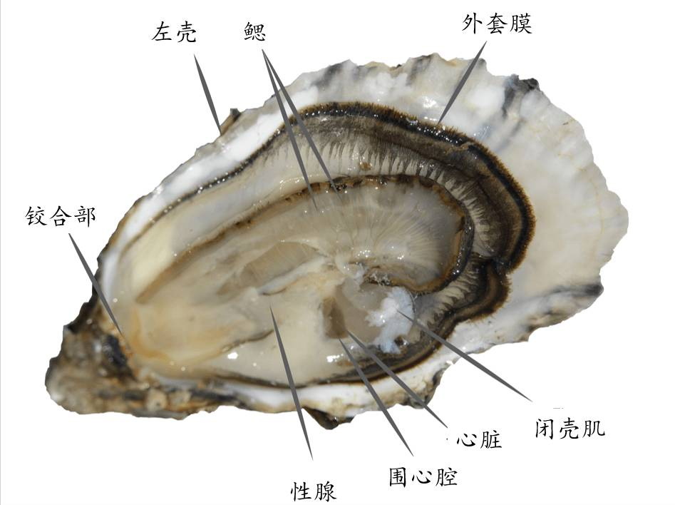

牡蠣屬海產軟體動物的雙殼貝類。有左右兩個不等的貝殼，以韌帶和閉殼肌相連。外套痕不明顯，成體無足和足絲，鰓與外套膜相結合。貝殼的形狀因環境的影響也有一些變化，但同種牡蠣的外部形態基本是一致的
左殼又稱下殼，右殼又稱上殼，左殼稍大而色深，並固着在它物上，右殼平，稍小似蓋，貝殼表面生有鱗片，鉸合部無齒，有時具有結節狀小齒。內韌帶，閉殼肌位於中央或後方.

蚵普知識一：鮮蚵、牡蠣、生蠔一家親
而之所以會有不同的稱呼，則源自於不同地區的慣用叫法，閩南語地區稱之為蚵仔、粵語地區稱之為蠔，但其實它們都屬同類。.
因養殖方式的差異，金門石蚵口感不同於台灣，體型小但也更為Ｑ彈有勁
金門的石蚵是長在石頭上面的，跟台灣養在蚵棚上面的不一樣.
金門傳統養蚵的方法，是讓蚵苗附著在人工豎立的石條上金門蚵田是以石條養殖，該方法相傳緣起於明萬曆年間，至今已二百多年。
金門傳統養蚵的方法，是讓蚵苗附著在人工豎立的石條上，因此所產的蚵被稱為「石蚵.
蚵殼粉具有豐富的礦物質，可以作為肥料，調整土壤的酸鹼質，也可以作成動物飼料，其中飼料又分成兩種，碎片狀和粉狀。 碎片狀的可以作為雞、鴨、鴿子的飼料，粉狀的適合混在豬、鰻魚等動物的飼料中食用。 林先生說，他的工廠所生產的蚵殼粉，目前多是提供給國內的幾間飼料大廠作為原料，如福壽、卜蜂等廠商，都是向他收購，另外，台塑也有向他購買蚵殼粉來製造有機肥料。